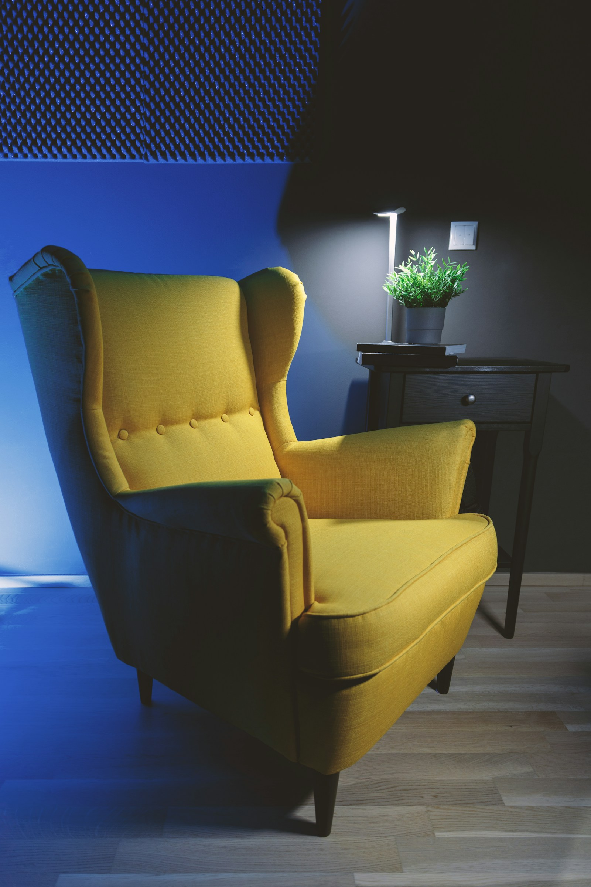
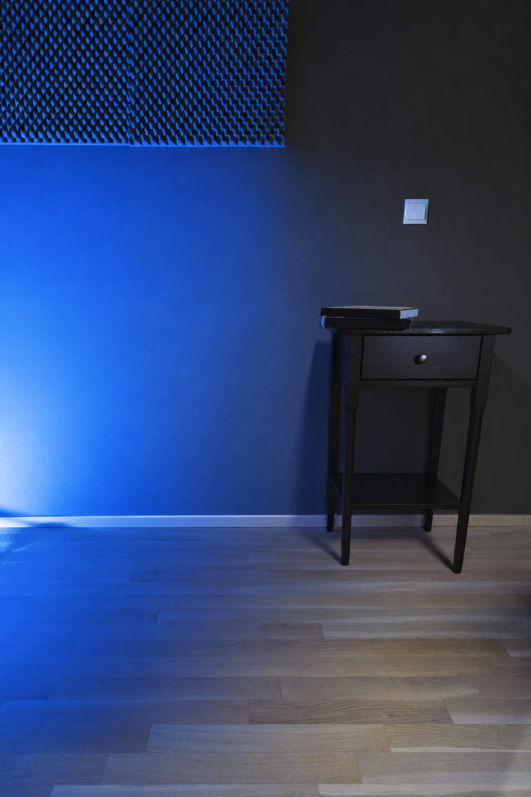

A待生成
整图直接生成
原照片 → 完整空间
照片中的物件作为整体空间的一部分生成。
READING NOOK / 单张照片
直接生成整个房间，或先拆出物件再组装。
放在同一视角下，看清差别。
正在读取实验状态…

同一输入 · 同一世界模型
原照片 → 完整空间
照片中的物件作为整体空间的一部分生成。
补背景 + 独立物件 → 组合场景
背景已生成；独立 GLB 的实际状态会在下方列出。
B 路线 / 拆分过程

补全原先被遮挡的墙面和地板。边桌与书保留。
如何读这个对比
一张照片，两条工作流。A 将整张照片交给世界模型；B 先移除指定物件、补背景，再分别生成物件并人工放回空间。
两侧沿用同一世界模型与相同显示精度，共用数值机位，未进行像素配准。B 的移除指令与 A 的保留指令不同，且空间生成带有随机性，因此这是一组工作流示例，不能单凭一组结果判断普遍优劣。
原图没拍到的区域，以及被遮住的物件结构，都包含模型推测。人工调整的位置、朝向和比例会单独记录。
结果与边界